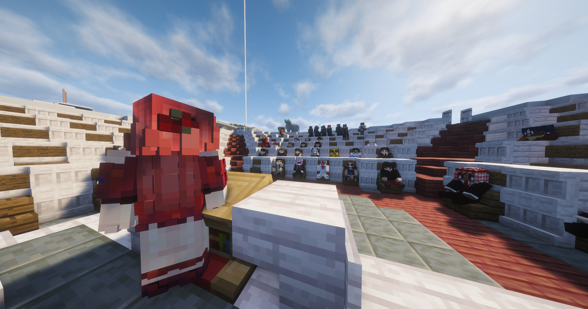
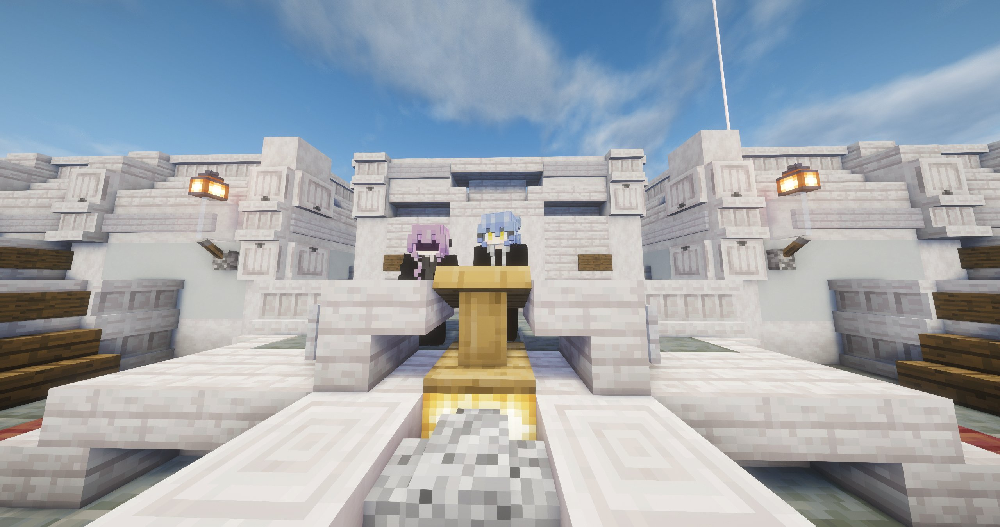
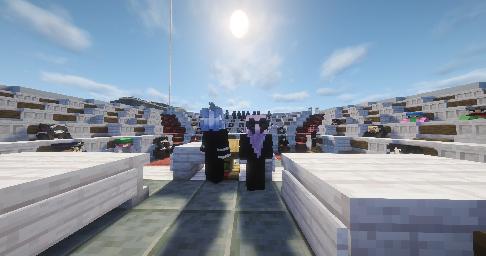

Conseil au parlement : entre annonces historiques et attaque en pleine séance
Nouveaux membres, réformes économiques majeures, Alan Leonhart classé criminel de rang S et flèches enflammées en pleine salle — une réunion qui restera dans les mémoires.

La séance d'hier au parlement restera gravée dans les mémoires. Convoquée en urgence suite au visionnage de la vidéo de menaces diffusée par Alan Leonhart, cette réunion a rapidement enchaîné intégration de nouveaux membres, annonces économiques majeures et une attaque en pleine salle de conseil. Le Karmine Déchaîné vous livre le compte-rendu complet.
La vidéo qui a tout déclenché
C'est après le visionnage d'une propagande criminelle publiée par Alan Leonhart que le conseil a été réuni en urgence. Ce document contenait des menaces de mort explicites envers le président Mr Jackson et l'ensemble du gouvernement. Une vidéo qui, selon les mots mêmes des élus, ne restera pas sans réponse.
Nouveaux visages au parlement
Le conseiller Januk a officiellement accueilli deux nouveaux membres au sein des institutions : Mme Boo — élue directement par les citoyens, représentante du peuple — et Mr Carl, nommé en charge de l'urbanisme, qui aura pour mission de planifier le développement et l'amélioration de l'île.

Point économique — banque, impôts & investissements
Sohalia et Zackk ont pris la parole pour faire le point sur la situation économique. Plusieurs annonces importantes : les marchands seraient partis dans des pays voisins avec un retour attendu d'ici un à deux jours ; le taux d'imposition sera abaissé à 10% (7% au guichet) ; des investissements dans les entreprises locales sont prévus en partenariat avec le fisc ; la banque proposera désormais un service marchand dédié aux entreprises ; et certaines taxes jugées trop complexes seront supprimées.
Alan Leonhart — criminel de rang S
Le président Mr Jackson a révélé avoir reçu une missive d'Alan Leonhart avant même la diffusion de la vidéo de menaces — dans laquelle ce dernier se déclarait ouvertement ennemi du gouvernement et menaçait de faire pendre le cou du président. Face à ces actes répétés, Alan Leonhart est désormais officiellement classé criminel de rang S — le niveau de dangerosité le plus élevé reconnu par les autorités.
La situation a pris un tournant encore plus dramatique lorsqu'Alan Leonhart a attaqué la séance en tirant des flèches enflammées en plein conseil. Il a été immédiatement pris en chasse par la police.

Prise de parole de Lady Lumière
Invitée à s'exprimer par le conseiller Januk, Lady Lumière a fermement démenti les accusations portées contre elle dans la propagande d'Alan Leonhart. Elle a annoncé la préparation d'un communiqué vidéo officiel pour répondre point par point, et rappelé avec force : rien ne justifie le crime commis contre Boo.
Nouvelles élections & Mme Boo en action
Dans un souci de transparence démocratique, le conseiller Januk a annoncé l'organisation de nouvelles élections afin de confirmer la confiance du peuple envers le président Mr Jackson. Dans sa première prise de parole officielle, Mme Boo a annoncé la mise en place d'un phare sur les îles jumelles à l'ouest, où les citoyens pourront déposer de manière anonyme leurs requêtes et avis. Un coffre de partage de ressources sera également mis à disposition.
Urbanisme — Mr Carl présente sa vision
Mr Carl a exposé ses ambitions : amélioration de l'île, recueil d'idées citoyens, un métro financé directement par le président Mr Jackson, et un tribunal dont la construction est attendue dans les prochains jours.
Mme Cyra & Benzouz — immunité diplomatique invoquée
Coup de théâtre en fin de séance : Mme Cyra et Benzouz ont invoqué l'immunité diplomatique et dénoncé des accusations fausses à leur encontre. Le conseiller Januk, Sohalia et le président Mr Jackson se sont personnellement portés garants des deux individus — une décision que le Karmine Déchaîné continuera de suivre de très près.
"Une réunion convoquée en urgence, des flèches enflammées, un criminel de rang S, de nouvelles élections et une immunité diplomatique. Notre territoire n'a décidément pas fini de nous surprendre."
— La Rédaction